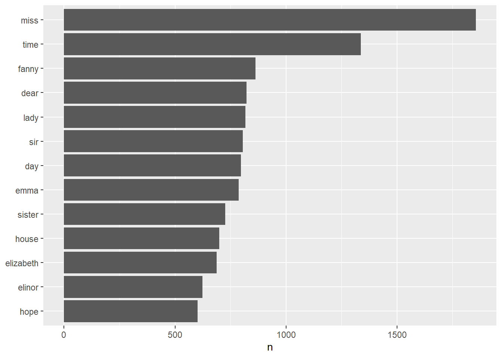
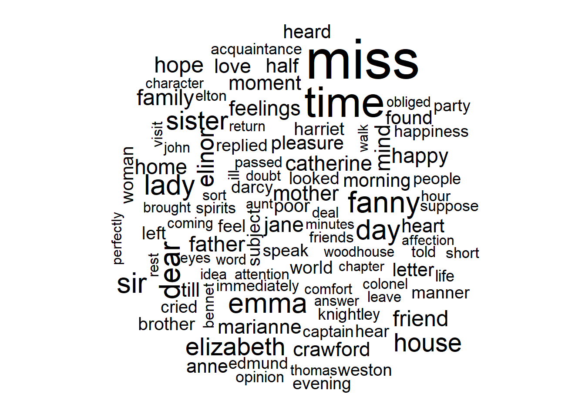

Chapter 2 Text processing
2.1 Text data
- Text data can be understood as sequences of characters or sequences of words
2.2 NLP applications
- Document classification
- Sentiment analysis
- Author identification
- Question answering
- Topic modeling
2.3 Tokenization
It consists of defining the unit of analysis. This might include words, sequences of words, or entire sentences. We can tokenize text at verious units including: charcters, words, sentenses, lines, paragraphs, and n-grams.
N-grams: An n-gram is a term in linguistics for a continious sequence of n items from a given sequence of text or speech. The item can be phonemes, syllabes, letters, or words depending on the application, but when most people talk about n-grames, they mean a group of n words. Examples: unigrams (“hello”, “day”, “work”), bigrams (“good day”, “hello world”), trigrams (“tou and me”, “day of work”).
Bag of words: When we extract n-grams from a text documents, the collection of these n-grams are called bag of words, since the tokens have no specific order.
##
## Attaching package: 'dplyr'## The following objects are masked from 'package:stats':
##
## filter, lag## The following objects are masked from 'package:base':
##
## intersect, setdiff, setequal, unionlibrary(stringr)
original_books <- austen_books() %>%
group_by(book) %>%
mutate(linenumber = row_number(),
chapter = cumsum(str_detect(text, regex("^chapter [\\divxlc]",
ignore_case = TRUE)))) %>%
ungroup()
original_books## # A tibble: 73,422 x 4
## text book linenumber chapter
## <chr> <fct> <int> <int>
## 1 "SENSE AND SENSIBILITY" Sense & Sensibility 1 0
## 2 "" Sense & Sensibility 2 0
## 3 "by Jane Austen" Sense & Sensibility 3 0
## 4 "" Sense & Sensibility 4 0
## 5 "(1811)" Sense & Sensibility 5 0
## 6 "" Sense & Sensibility 6 0
## 7 "" Sense & Sensibility 7 0
## 8 "" Sense & Sensibility 8 0
## 9 "" Sense & Sensibility 9 0
## 10 "CHAPTER 1" Sense & Sensibility 10 1
## # ... with 73,412 more rows# tokenization
library(tidytext)
tidy_books <- original_books %>%
unnest_tokens(word, text)
tidy_books## # A tibble: 725,055 x 4
## book linenumber chapter word
## <fct> <int> <int> <chr>
## 1 Sense & Sensibility 1 0 sense
## 2 Sense & Sensibility 1 0 and
## 3 Sense & Sensibility 1 0 sensibility
## 4 Sense & Sensibility 3 0 by
## 5 Sense & Sensibility 3 0 jane
## 6 Sense & Sensibility 3 0 austen
## 7 Sense & Sensibility 5 0 1811
## 8 Sense & Sensibility 10 1 chapter
## 9 Sense & Sensibility 10 1 1
## 10 Sense & Sensibility 13 1 the
## # ... with 725,045 more rowsThis function uses the tokenizer package to sperate each line of text into tokens. By default, it performs a word tokenization but we can select other options for chearcters, n-grams, sentences, lines, paragraphs…
2.4 Stop words handeling
Often in text analysis, we will want to remove stop words; stop words are words that are not useful for an analysis, typically extremely common words such as “the”, “of”, “to”, and so forth in English.
## Joining, by = "word"2.5 Words frequencies
- Find the most common words in all the books
## # A tibble: 13,914 x 2
## word n
## <chr> <int>
## 1 miss 1855
## 2 time 1337
## 3 fanny 862
## 4 dear 822
## 5 lady 817
## 6 sir 806
## 7 day 797
## 8 emma 787
## 9 sister 727
## 10 house 699
## # ... with 13,904 more rows# plot the most common words
library(ggplot2)
tidy_books %>%
count(word, sort = TRUE) %>%
filter(n > 600) %>%
mutate(word = reorder(word, n)) %>%
ggplot(aes(word, n)) +
geom_col() +
xlab(NULL) +
coord_flip()
- plotting a wordclouds
## Loading required package: RColorBrewer## Joining, by = "word"